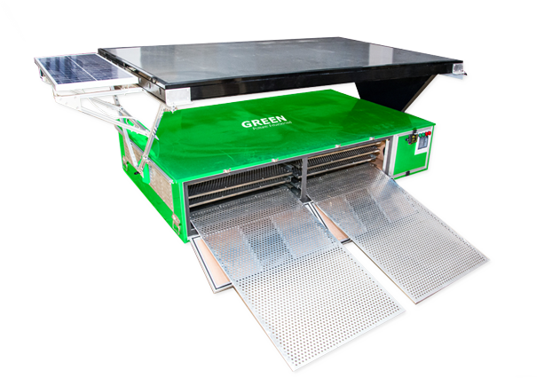

Demand for cocoa is 7.3 %
Are you challenged of yielding quality cocoa beans?
The problems faced by cocoa farmers with sun drying are beans damage by rodents, contamination by windblown dust and dirt, inconsistency in the weather conditions and frequent turning. Electricity scare also a foremost problem faced by them. Drying these products with the solar dryer can help to resolve these problems and makes high value & return.
Here is how you can overcome the problem?
GREEN Solar Powered Cocoa Dryer is a specialized Cocoa Drying mechanism designed, developed and manufactured to process the Cocoa beans processed in the form of dried beans using a combination of Solar Thermal and Solar Photovoltaic technology engineered for optimal temperature and humidity for quality bean processing. Our main purpose of solar cocoa dryer is to dry the cocoa beans in the natural manner and it also produces the less intensity of heat which dries the beans naturally.
About 65 % of cocoa producing farmer’s facing difficult of drying traditionally & 36% were facing electricity scare. Are you one among them?
INCREASE YOUR COCOA PRODUCTION WITH SOLAR POWERED COCOA DRYER!
Solar Powered
Cocoa Dryer
Key Features
Drying Effectiveness
The drying time for solar dryer integrated was 25% reduction in comparison with direct sun drying. The drying time for solar dryer integrated with absorbent and decreased up to 45.45%. These facts reveal that solar dryer integrated with desiccant is more effective in comparison with direct sun drying.
Effective diffusivity
Solar powered cocoa dryer has effective diffusivity which is the overall mass transport property of moist which includes liquid diffusion, vapor diffusion, hydrodynamic flow, and other possible mass transfer mechanism.
Protection
Protection of drying Cocoa from bird or insect contamination, air, wind and dust pollution etc. Solar powered cocoa dryer has longer dried product life due to full drying and good quality of product.
Easy Installation
Makes Installation easy, control and operate – No specialized training required. High Efficiency and Long Service Life and Enhanced heating ability, every 2 square meters.
Easy transferrable
From here the coffee cherries are washed using vast quantities of water and some very particular equipment, leading to the maximised preservation of the coffee bean’s potentia. Picking the Ripe red coffee cherries
best dryer
The coffee produced by this method is strikingly similar to others of its batch, and green. Very few beans that are determined to be waste product are to be found. The coffee may be dried be mechanical means.
Quick Work
Frequent turning occurs so that the drying is even all over the bean, and takes anywhere from 8 to 10 days to complete. This is of course dependent upon humidity and temperature, both of which can help or hinder this method.
Our Categories

COCOA DRYER
Large Product Line
Good Financial Position & TQM
-
10 KG
Cocoa Seeds -
10 KG
Cocoa Seeds -
10 KG
Cocoa Seeds
Frequent turning occurs so that the drying is even all over the bean, and takes anywhere from 8 to 10 days to complete. This is of course dependent upon humidity and temperature, both of which can help or hinder this method.
COCOA DRYER - 10kG
Large Product Line
Good Financial Position & TQM
-
10 KG
Cocoa Seeds -
10 KG
Cocoa Seeds -
10 KG
Cocoa Seeds
Frequent turning occurs so that the drying is even all over the bean, and takes anywhere from 8 to 10 days to complete. This is of course dependent upon humidity and temperature, both of which can help or hinder this method.